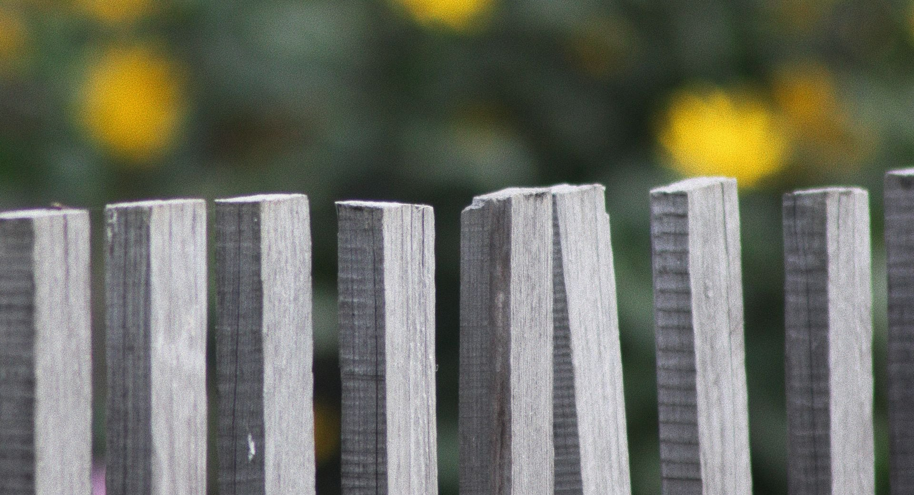
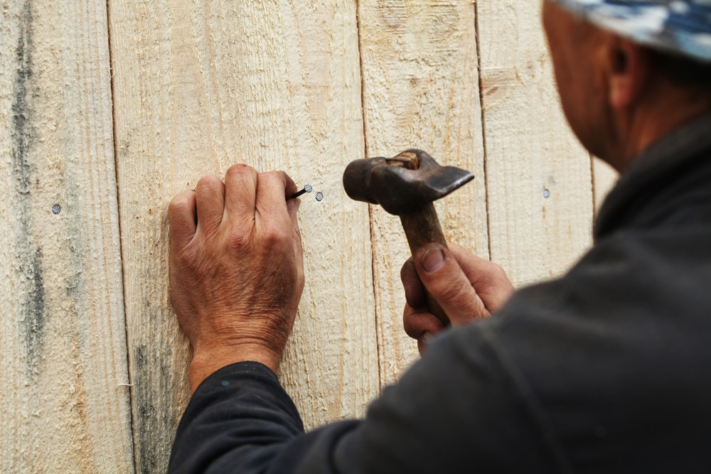
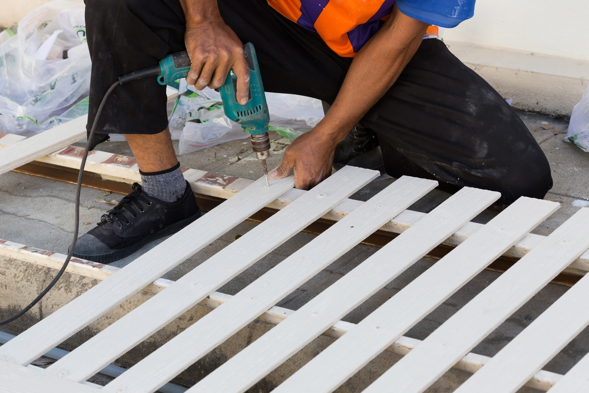
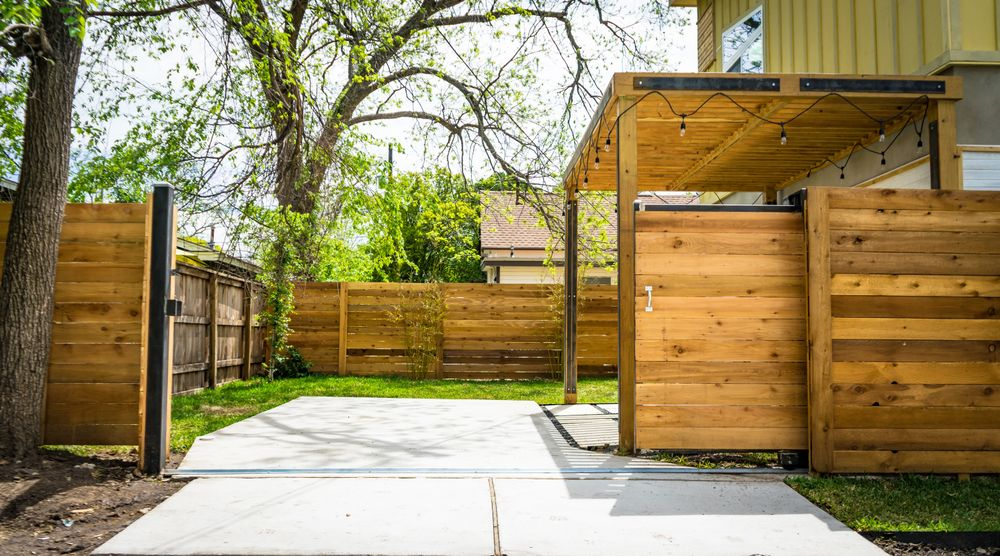

Big Easy Fence repairs residential and commercial fences in Covington, from wood and vinyl to metal and chain-link. Every job starts with a close look at the damage, so the repair fits the problem and the fence around it.
A fence rarely has just one problem, so the evaluation covers the whole run. These are the issues we look for.

Soft, dark, or crumbling wood, usually near the ground and around posts. Rot keeps spreading, so the earlier it is found, the smaller the repair.
Hollowed or chewed wood that can still look sound on the surface. Termites weaken boards and posts from the inside.
Panels that have pulled away from their rails or posts and shift or rattle when the wind picks up.
A cracked or leaning post puts strain on every panel attached to it, so it is one of the first things we check.
Rust on posts, rails, and hardware, along with bent or broken sections on metal and chain-link fences.
Boards that have twisted or bowed, plus cosmetic damage that hurts how the fence looks from the street or the yard.
The right fix depends on what the fence is made of. Here is what we handle in Covington.
Damaged panels, boards, and pickets get repaired or replaced, along with problems from rot, termites, or warping. New material is matched to the existing fence so the repair blends in.
Cracks, holes, and loose sections on privacy, semi-privacy, picket, and ranch rail styles. The aim is a fence that looks the way it did when it was installed.
Bent or broken sections, damaged posts, and rusted parts. These fences are durable, but time and weather still wear them down, and repaired sections should match the rest.
The process is simple, and the first step matters most.

We look over the whole fence before recommending a repair, covering both structure and appearance. That way nothing gets missed, including problems you have not noticed yet.

From the assessment we build a repair plan for your fence, whatever it is made of. New boards, panels, and parts are chosen to blend with the existing fence, so the fixed section does not stand out. The goal is to finish within a timeframe agreed with you, with as little disruption to your day as possible.
Fixing damage while it is still small keeps the fence doing its job.
A sound fence discourages trespassers and keeps your property protected. Broken sections and leaning posts weaken that protection.
Missing boards and gaps let people see in. Repairing them restores the screen between your property and the street or your neighbors.
A straight, complete fence makes a property look cared for, and a repaired one keeps it that way.
If you plan to sell, or simply want a yard you enjoy, an attractive fence adds charm and value.
Explore the rest of our Covington fencing services.
What Covington property owners ask before calling for a repair.
Get a free, no-obligation estimate for your property.